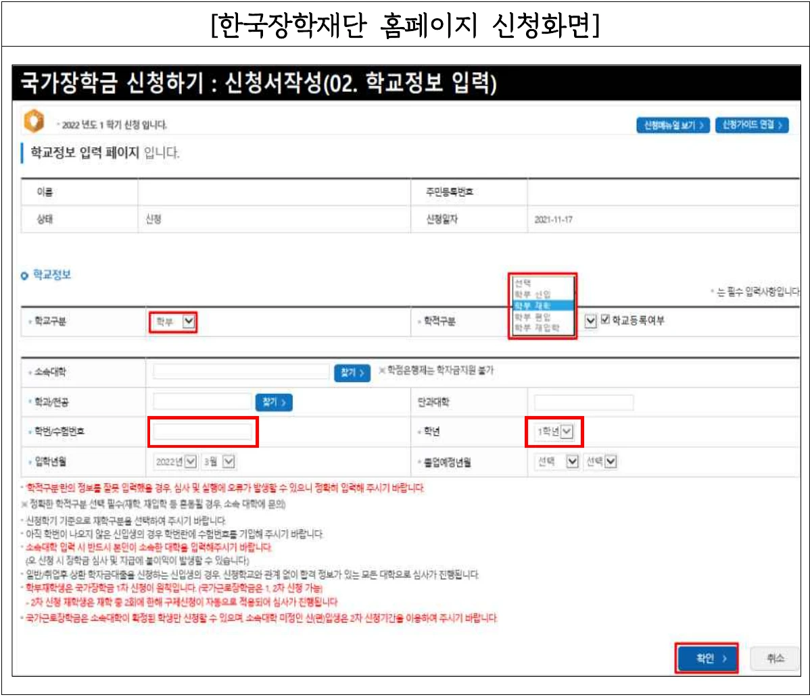

PC 홈페이지
‘학교정보 입력’에서 학적구분을 선택하고 학번 또는 수험번호와 학년을 입력하세요.

2027학년도 1학기 · 1차 신청
재학생은 1차 신청이 원칙입니다. 신입생도 1차에 신청할 수 있습니다.
한국장학재단에서 신청 ↗한국시간 기준 · 일정 변경 여부는 대학 공지와 한국장학재단에서 확인하세요.
2027학년도 1학기 기준으로 본인에게 해당하는 항목을 선택하세요.
학번이나 수험번호는 한국장학재단 신청 화면에서 입력하세요.
| 대상 | 학적구분 | 번호 | 학년 |
|---|---|---|---|
| 신입학 | 학부 신입 | 수험번호 | 1학년 |
| 전공심화 2년 | 학부 편입 | 수험번호 | 3학년 |
| 전공심화 1년 | 학부 편입 | 수험번호 | 4학년 |
| 재학·복학 | 학부 재학 | 학번 | 2027년 기준 |
| 재입학 | 학부 재입학 | 학번 | 2027년 기준 |
완료한 항목을 표시하세요. 체크 상태는 이 브라우저에 저장됩니다.